Web interface
Tour of the web interface
The top bar links seven pages: Map, Deck, Logs, Settings, Instances, AutoFarm and OGame. What they share is in On every page.
First run: adding your account
With no account yet, TGoat opens the Instances page at Add an account. The other pages link to it.
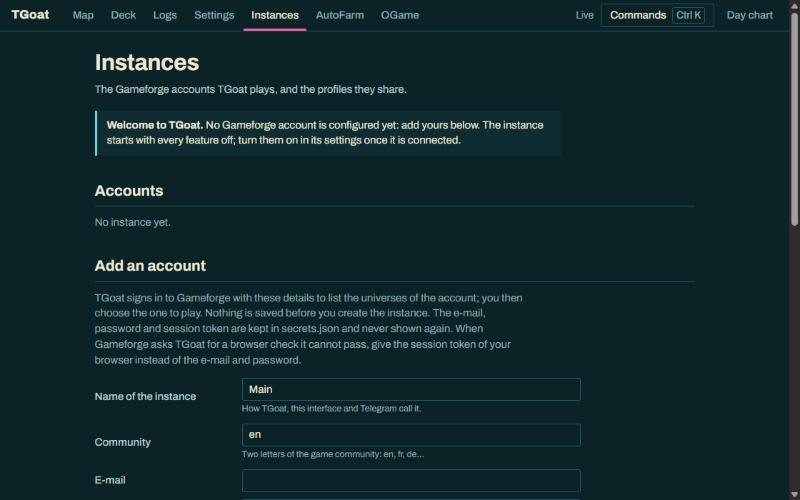
- In Name of the instance, type a name for this account.
- In Community, type the two letters of your game community, such as
en. - Enter the E-mail and Password of your Gameforge account.
- If Gameforge asks for a captcha, or for two-factor, click Sign in with your browser under Session token (how). On a server, click Sign in from another computer (how). Or paste a Session token (how). While a browser sign-in runs, the lobby and proxy fields are locked: cancel it to change them.
- Tick Pioneers test lobby only if you play there.
- For a proxy, tick Connect through a proxy and fill in its fields. Tick Login only to use it just for signing in.
- Click Test the login. With a captcha, this can take a minute. Nothing is saved yet.
- Pick the universe this instance plays. A blocked player shows in red and can't be picked.
- Click Create the instance. It connects at once, with every feature off.

When the test fails, TGoat says why. Fix the details and test again, or click save it without testing and type the universe yourself. An account with no player needs one first: create it from your browser.
A Telegram (optional) section then asks for your bot's Bot token and your Chat ID. Click Save and connect Telegram, or Skip.
Next, open Settings and turn on features one section at a time. Each feature's switch sits in its section title.
If you come from TBot 3.6, your accounts are already there, with an Import report. If the import was blocked, a red banner shows the report and no instance starts until you fix the old files.
Map
The Map is the home page: your whole empire at a glance, with fleets in flight, incoming attacks and what comes next.

- The instance panel (left): status, commands, and the Features and Key folds.
- The chart (centre): one ring per galaxy, galaxy 1 inside. System 1 is at the top; systems run clockwise.
- The tools under the chart: layers, zoom, Index and Bridge view.
- The detail panel (right) opens when you click something. Esc closes it.
- The timeline (bottom): everything due in the coming hours.
Reading the chart
Your planets are gold discs that fill from the bottom as their fullest storage fills: a full disc is losing production. Coloured lines are fleets in flight, with an arrowhead and a countdown where the fleet is now. A blue ring means a build, a red ring an attack. Hover anything to see its name.
All the marks of the chart (14), build rings and attacks
Fleet routes are bright for the part left to fly.
A blue ring fills around a body while it builds, clockwise from the top. Zoom in and the body gets a third line: what builds, the time left, and +1 for each other busy queue. Hover the body to list them all.
An attacked body gets a red ring, and a red circle closes on it as impact nears. The game does not say when the hostile fleet left, so the map shows no position for it.
| You see | It means |
|---|---|
| Gold disc | Your planet. |
| Small disc beside it | Its moon. |
| Blue ring | Building in progress. The faint part is what is left. |
| Red ring | Under attack. |
| Gold line | Expedition. |
| Pink line | AutoFarm raid or attack. Dotted: espionage. |
| Blue line | Transport, deployment (dashed), harvest (dotted), colony ship. |
| White dashed line | Fleet save. |
| Grey line | Any other mission. |
| Round dot | Fleet holding at its destination. |
| Cross, italic coordinates | A destination that isn't yours. |
| Red triangle | The attacker's planet. |
| Diamonds | AutoFarm targets, as on the AutoFarm page. |
| Ticks inside a ring | Systems AutoFarm scanned. Pink: targets found. |
The instance panel
The status sentence says whether the instance is awake or asleep, and how many fleet and expedition slots are in use. A login problem shows in red.
- Sleep for… puts the instance to sleep now, for 30 minutes to 8 hours. Wake up ends it.
- Profile… loads a profile, or resets to the instance's own settings.
- Reload settings reads the settings files now. TGoat already does it when a file changes.
- Features lists each feature with its state and the countdown to its next pass. Click one to open its panel, or to turn it on or off.
- When a research runs, a line names it with its countdown. Click the name to see why TGoat chose it.
A sleep you ask for, and bedtime
Bedtime still happens at its time, with its fleet-save, and the instance stays asleep. If the sleep ends during the night, it sleeps on until the wake-up time. A new connection to the game keeps the sleep; disabling the instance or restarting TGoat ends it.
The Defender while the instance sleeps
Every request to the game marks your current planet active, even a look at the event list. So by default the Defender watches on alert (Defender.NightWatch set to OnAlert). TGoat keeps the game's notification channel open, as the game tab of a browser does, day and night; it marks no activity. At night the Defender sends nothing while no message comes.
- A new message, a spy report for example, brings a check 1 to 3 minutes later. If it sees no attack, one more check comes 8 to 15 minutes after the message (
Defender.NightWatchFollowUp): most attackers send their fleet a few minutes after reading their report. A later message, not in the same burst as the first, gets its own look 8 to 15 minutes later. Any message counts: your fleets' reports and private messages too. The Defender listens by day as well, so a message just before bedtime keeps its checks at night. - A reconnection of the channel at night brings one check: a message may have come while it was not listening.
- An attack it sees is followed until it is handled or gone.
- Every 20 to 40 minutes, TGoat checks that the game still listens, without asking the game anything. If the game ignores or refuses that check, TGoat opens a fresh connection every 20 to 40 minutes instead, before closing the old one, so nothing is missed.
An attack sent without a fresh espionage report, or after these checks, is not seen. If the channel cannot open, stays down, stops answering, reopens more than 4 times in an hour, or your proxy refuses its port, you get a warning and the Defender checks at its sleep pace (every 4 to 8 minutes by default) until the wake-up. Always does that all night, so one planet looks active. Never starts no new check; an action already planned (a fleet-save, a recheck, hiding resources, a missile defence held by a passing error) still happens. The bedtime notice says which one applies.
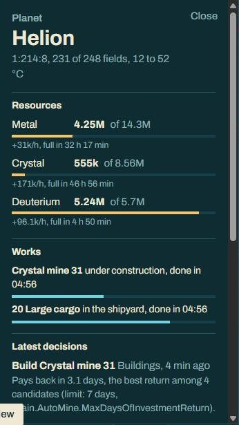
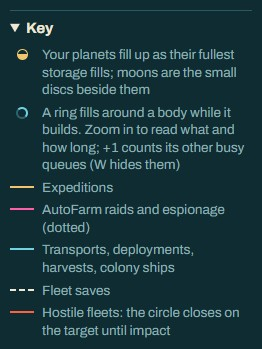
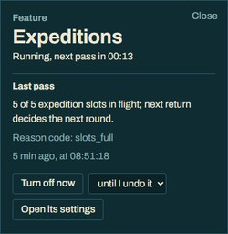
The detail panel
Click a planet, moon, fleet, attack, feature or AutoFarm target to open its panel on the right.
What each panel shows (5 kinds)
- A planet or moon:
- storage and time until full;
- Works: what builds, with its countdown (buildings, lifeform buildings, lifeform research, shipyard), and which queues are idle;
- Levels: every building, the one in progress highlighted, and under them TGoat's decision with its reason and next pass. On a planet with a lifeform, Lifeform shows its lifeform buildings;
- the other decisions, flights, docked ships and defences.
- A fleet: its Schedule, ships, cargo and the feature that sent it. Board this fleet follows it in 3D.
- An attack: the countdown, the attacker, the Defender's decision and the attacking fleet.
- A feature: its Last pass with the reason code, a Turn on now or Turn off now button, and Open its settings.
- An AutoFarm target: its state, the reason and its last report.
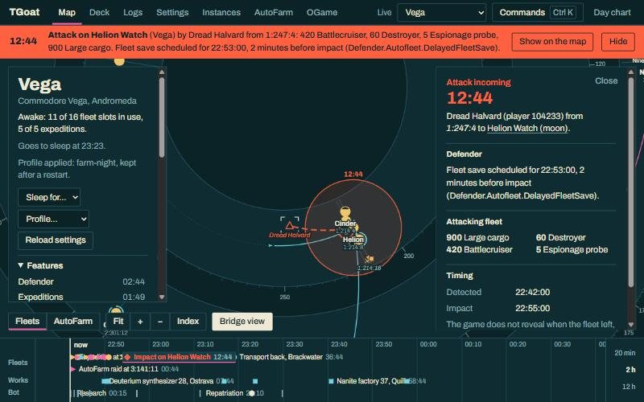
Turning a feature on or off
You can turn a feature on or off while TGoat runs, whatever its Active setting says. The settings files do not change.
- Click the feature in the instance panel of the Map, or in the list of the Deck.
- Pick how long in the duration list: until I undo it, for 1 hour, 4 hours or 24 hours.
- Click Turn on now or Turn off now.
- To go back, click Follow the setting.
The same choice is in the command palette (Ctrl K): Turn AutoFarm off now, or type off autofarm 45m or on expeditions 2h. Telegram and Discord have commands for it.
With the Defender turned off, nobody watches for attacks. The Deck and the Map say so in red.
What the states mean, and when your choice ends
In the Features list, a feature that isn't running reads off (in the settings), off by you or off until 12:11 (turned off by hand) or paused (sleep or manual mode). One you turned on by hand reads on by you. In its panel, the state line shows both the state you chose and the setting: Running, turned on by you (setting: off), Off until 18:00 (setting: on).
The choice ends when you click Follow the setting, when the duration ends, or when the feature's Active setting is written (Settings page, /settings set, a text editor). Reloading the settings, sleep, breaks, a reconnection, loading a profile and a restart of TGoat do not end it.
Sleep, manual mode, breaks and a planned ghost sleep still hold a feature you turned on: it starts when they end. The Whole Brain row turns the whole Brain on or off. A Brain feature you turn on while the Brain is off runs alone, without the rest of the Brain.
Play mode: Human, RAGE, Custom
One switch sets how fast TGoat plays. It sits under the instance name on the Map, on each card of the Instances page and at the top of the instance's Settings. In Telegram or Discord, /mode shows it and /mode rage sets it.
- Human (default) plays like a player: reactions of a few minutes, short pauses, expeditions and discoveries in waves, pages 1.5 to 8 seconds apart, and the breaks you set.
- RAGE drops every delay kept only for discretion, for the most yield. TGoat reacts within 1 to 3 seconds, fills every free slot at once, checks ten times as often (at most once a minute), loads pages 0.3 to 1.5 seconds apart and takes no break. It is easy to spot.
- Custom applies the
Pace.*settings one by one. Left at their defaults they play like Human. Under Human and RAGE they are greyed out.
Switching applies at once: nothing restarts, and features waiting on a long delay move forward. Game rules and safety do not change with the mode: the Defender's pace, the attack guard, fuel reserves, slot ranks, sleep and fleet-save times.
Directives
Directives is a feature like the others, off by default (Directives.Active). It collects the rewards of finished missions; its panel in the Features list gives the last pass: how many rewards TGoat collected, or why it collected none.
Its notices, and how often it collects
Directives.Notify says when you get a notice: every reward, only when Dark Matter comes in (the default), or never. The notice and the log line name each mission and its chapter. A mission that is not finished is never collected.
Every game page shows how many rewards wait. TGoat reads that number from the pages it already loads, and when it goes up it collects sooner, but not more than once every 30 to 60 minutes. The reason codes are in the table below.
The timeline
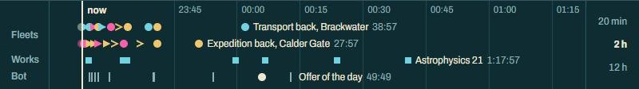
Three lanes: Fleets (arrivals, returns, attack impacts in red), Works (buildings, lifeform buildings and research, shipyard, research) and Bot (next passes, sleep and wake-up). Crowded events shrink to their mark: hover to read one, click to show it on the map. 20 min, 2 h, 12 h or the mouse wheel change the scale.
Moving around
- Drag to move. Use the wheel or double-click to zoom. Fit (0) shows the whole universe.
- Fleets (F), Works (W) and AutoFarm (T) show or hide the routes, the construction rings and the AutoFarm layer.
- Index (I) lists attacks, bodies and fleets as text. Click a line to show it.
- To find a planet, press Ctrl K and type its name.
- Bookmark the page to come back to the same planet or fleet.
The bridge view
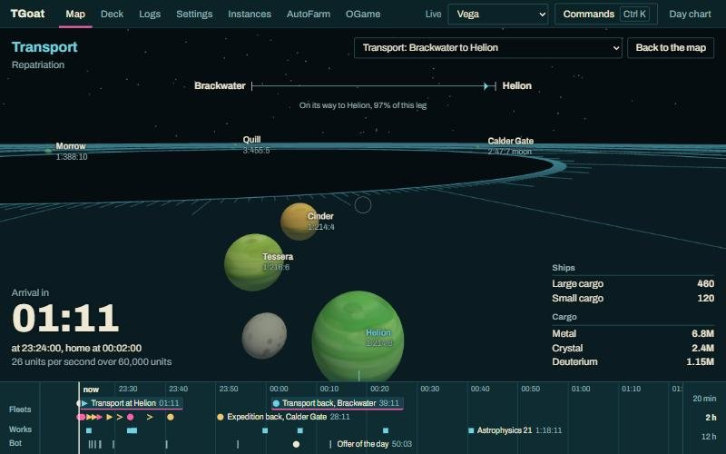
Bridge view (B) puts you aboard a fleet in flight, in 3D, with its route, countdown, ships and cargo. A list at the top changes fleet. Back to the map or Esc leaves.
It needs a wide screen and a browser with 3D graphics. While the instance is not connected, the button is greyed out.
Command deck
The command deck (Deck) shows your empire in 3D from your flagship, framed by instruments. Leave it open on a second screen to watch for attacks.

- Top left: the game server clock, the next sleep or wake-up, and the Fleet slots and Expeditions gauges, gold when full.
- Left: Features and Brain, with countdowns and last results.
- Centre: your bodies and fleets. A hostile contact shows in red, labelled "position estimated".
- Top centre: the countdown to the next impact, or a sleep or manual-mode notice.
- Bottom left: Events, the last six things that happened.
Click anything to lock the camera on it and open its panel, with Open on the map. Esc releases it.
- Camera: Watch turns to each event by itself; Free lets you steer.
- Time: ×10 or ×60 previews what comes next, without touching the game. Back to live returns.
- Sound: On plays an alarm tone when an attack is detected.
- Works (W): On draws the map's ring around each body that builds. The choice is shared with the Map.
- Stationed at … picks the planet the flagship guards.
The deck needs a screen wider than 760 pixels and a browser with 3D graphics.
Proposals
A feature set to Suggest (Brain.Boosters, the AutoMine production settings, Expeditions.BuildFleet, AutoFarm.BuildBreakers) does not act alone: it sends you what it would do and why, and waits. Each proposal has a number. To accept one:
- its notification has an Accept button;
- the command deck lists every proposal waiting, each with its button;
- the command palette (Ctrl K) offers "Accept proposal N";
- on Telegram, send
/accept N, or/acceptalone for all of them;/proposalslists them; - Discord has
/proposals list,/proposals acceptand an Accept button under the notification.
TGoat checks that the reason still holds before it acts.
What happens when you accept, and when a proposal goes away
When you accept, TGoat first reads the game again and checks that the reason still holds. If it does, TGoat makes the change and tells you. If it no longer does, for example the storage has filled up or you activated a booster yourself, TGoat refuses and says why. If the game could not be read, the proposal keeps waiting. A proposal disappears when the feature no longer proposes it or when it expires; the same proposal is not sent to you twice in a day. A restart of TGoat drops what is waiting, and the features propose again.
AutoFarm
The AutoFarm page shows what AutoFarm scanned, each target with its state and the reason, and the attacks it sent. It refreshes every 10 seconds.
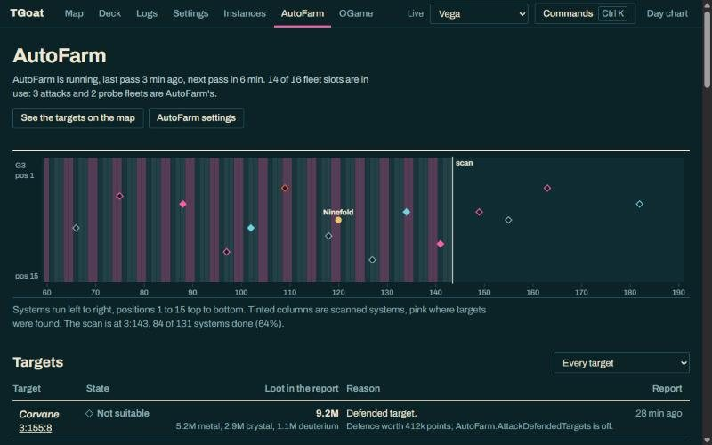
The status sentence gives AutoFarm's last and next pass, and the fleet slots its attacks and probes use. See the targets on the map and AutoFarm settings lead to the Map and to its settings.
In the sector, tinted columns are scanned systems, pink where targets were found. The white "scan" line is where the scan is now. Hover a diamond to read its reason; click it to find it in the table.
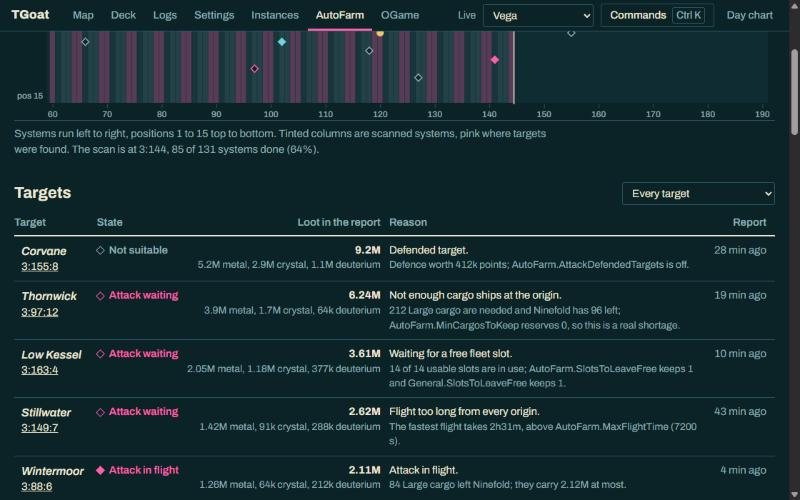
Targets lists every target with its state, Loot in the report, Reason and the age of the Report. The list above it filters the table, for example to Not suitable, and why.
To learn why a target is not attacked, read its Reason. The detail names the setting that decided, such as AutoFarm.AttackDefendedTargets.
| Diamond | State |
|---|---|
| Pink, filled | Attack in flight |
| Pink, hollow | Attack waiting for a slot, ships or a setting |
| Blue, filled | Being probed |
| Blue, hollow | Needs probes: no report, or an expired one |
| Red, hollow | Probes failed: the report lacks details |
| Grey, hollow | Not suitable, or Idle (resting after a raid) |
Attacks sent gives each attack's net gain once the fleet is seen coming back, or its expected loot, marked "~", before that. A fleet destroyed in battle shows in red. What AutoFarm logged shows its latest log lines.
Settings
The Settings page edits every setting of TGoat, of an instance or of a profile, with help for each one.

- Left: the file to edit, the Form, Advanced and History tabs, Find a setting, and the sections.
- Top: banners, such as a profile overriding some settings (Show them lists them).
- A feature's on/off switch sits in its section title, such as Watch for attacks for the Defender.
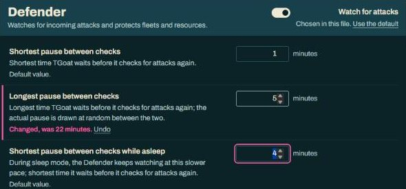
Under each setting, a note says where its value comes from, such as Default value or Chosen in this file. A pink edge marks a change not saved yet, a red edge a value refused.
Every note and edge under a setting (6)
| You see | It means |
|---|---|
| "Default value." | The file doesn't set it. |
| "Chosen in this file." | Set here. Use the default removes it. |
| "From the base profile …" | From a base profile. |
| Gold edge | A loaded profile overrides it for now. |
| Pink edge, "Changed, was …" | Not saved yet. Undo cancels it. |
| Red edge | Value refused, with the reason. |
Secrets (e-mail, passwords, tokens, keys) show only "Set, hidden" or "Empty". Type a new value to replace one, or click Erase. The stored value never reaches the page.
Saving
Changes wait in the bar at the bottom. Click Save 1 change (Ctrl S) or Discard. If a value is refused, nothing is saved.
TGoat applies a saved change by itself, restarting only the features concerned. Saving a login setting of a connected instance asks first, because it then logs in again.
If someone changed the same setting in the file meanwhile, choose Take the file's or Keep mine.
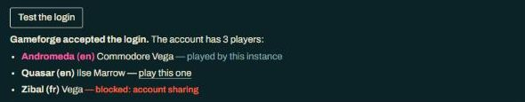
In Account, Test the login signs in with the form's values without starting anything, and lists your players.
Under Gameforge session token, the sign-in panel has two buttons: Sign in with your browser and Sign in from another computer. Sign in with your browser and TGoat on another computer explain them.
- Sign in with your browser says "Opening a browser on the computer that runs TGoat…", then "A browser window is open: sign in to Gameforge there. Waiting…". Cancel closes the window and the panel says "Sign-in cancelled."
- Sign in from another computer says "On the computer where you want to sign in, run this command within 10 minutes:", shows the command with Copy, then "Waiting for tgoat login…". Once the command has opened its window: "tgoat login opened a browser on the other computer: sign in to Gameforge there. Waiting…".
- When the token arrives, the panel says "Gameforge session token stored. The instance connects with it now." For a disabled instance: "The instance uses it once you enable it."
- On a running instance, a confirm box comes first: the new token logs it out and in again.
- After 10 minutes the panel says "No sign-in within 10 minutes: the browser window was closed." (or "The pairing code expired."), with Try again. A failure says "The browser sign-in failed:" and the cause, with Try again. If TGoat stops answering, it says "TGoat does not answer right now: trying again." and gives up after about 10 seconds.
Priority lists
Slot priority (General.SlotPriorityLevel) and spending priority (Brain.SpendingPriority) are lists, not number fields. The list shows the effective order, first at the top.
- Drag a feature by its grip or name, or click its up and down arrows.
- To give two features the same rank, tick Tied with the one above. Tick it again to untie them.
- Read the sentence under the list: it says what the order does, for example "When fleet slots run short: Expeditions first, then Brain, then AutoFarm and Colonize together."
- Save as usual.
How the ranks are written: ties, rank 0, hand edits
On save, TGoat writes the ranks as 1, 2, 3 and so on, and ties share a number. A file edited by hand keeps its numbers until you change the order. A rank of 0 takes a feature out of the ranking: it is shown apart, with a Rank it button. The Advanced tab still shows the numbers.
Finding a setting
Type in Find a setting to search names and help texts. Type changed: to list your unsaved changes, or profile: for the settings a profile overrides.
Advanced and History
Advanced shows the file as written and lets you edit it. Save the file points to the line and column of any mistake.
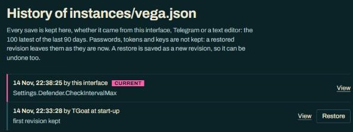
History lists the saves of the last 90 days (100 at most), with the settings each one changed. Restore brings a revision back; secrets keep their current values. A restore is itself a revision you can undo.
How do I… reset a value, undo a change, edit a profile
- …go back to the default value? Click Use the default under the setting, then save.
- …undo yesterday's change? Open History, then Restore the revision before it.
- …edit a profile? Pick it at the bottom of the file list.
Setup assistant
The default settings are written for a new account. The setup assistant reads where your account stands, asks the few things it cannot read, and proposes settings that fit, with the reason for each. It writes nothing until you click Apply.
It only changes settings. The features keep deciding with their own logic, and the assistant never builds ships for you: when a feature needs ships you do not have, the plan says how many to build first.
Opening it
The first time, a banner on the Map offers it once TGoat has read your account. After that, open it with the Setup assistant button at the top of an account's Settings page, or from the command palette (Ctrl K).
When it offers itself, and what it reads first
- First run. Once TGoat has read your account, a banner on the Map says "TGoat read your account. Answer a few questions to get settings that fit it." Click Start, or Not now. It shows once per account: it does not come back after Not now or after you applied a plan. Opened any other way, the assistant has a Close button instead of Not now.
- New stage. When the account grows, one line in the Logs says so, once per stage, for example "Your account reached the Growth stage (5 of 9 planets, mines at level 21): the setup assistant may suggest better settings." No pop-up.
Opening it may read your Empire view and your inventory once, if TGoat has not read them in the last 10 minutes. If the account is not read yet (TGoat is still logging in, or the game is unreachable), the assistant says so and offers to try again. It never builds a plan on an account it has not read.
The questions
At most six, one per screen, about your goal, presence, risk, expeditions, expansion and notifications. Each answer is already filled in from your account, with the reason in small print. A question that does not apply is skipped.
The six questions and what each one drives (6)
Each screen has Back and Next and the step. The plan counts as the last step: with six questions, the third reads "Step 3 of 7". A choice you made yourself is the answer filled in, for example expeditions you turned off or your notification level ("You chose Attacks only").
| Question | What it drives |
|---|---|
| Goal: grow the economy, raid inactive players, or both with the economy first | Whether AutoFarm is turned on, and the research profile. |
| Presence: when you are away for long (nights, work hours) | Sleep mode and its hours, the night fleet-save, breaks. |
| Risk: careful, balanced or bold | Which targets AutoFarm attacks, whether expeditions take a combat ship, whether the Defender hides resources in a build. |
| Expeditions: none, some or a lot | How much expeditions matter next to the Brain's flights and raids. Some: they use the fleet slots left after the Brain and raids. A lot: first in line, and a night round when you are away. The fleet of each expedition is always calculated, whatever you answer. Asked only when you have astrophysics and a ship that can fly. |
| Expansion: fill the free planet slots or not | Colonize on or off. Asked only when slots are free. |
| Notifications: attacks only, important, or everything | Notifications.Level. Asked only when Telegram, the Discord bot or a Discord webhook is set up: the level only filters those. |
If your answers contradict your account, the assistant says so. For example: "You want to raid, but you have no cargo ships: the plan suggests building some first."
The plan
The plan is a short list of themes: Economy, Raids and harvest, Expeditions and discovery, Expansion, Logistics, Safety and Notifications. Only the themes that change something appear. Each one shows:
- what it changes, in one sentence;
- Why: the reason, with the numbers of your account;
- Show the N settings: each setting with its current value, the proposed one and a short reason;
- Apply and Skip.
At the bottom, Apply N themes applies every theme you did not skip. The numbers in the plan come from the same calculations the features use. The assistant does not propose colonisation zones or temperatures: for Expansion it only turns Colonize on or off and says how many slots are free.
What it never changes
A value you set yourself, a setting an active profile decides, or a profile file. You can still tick a value of yours to change it.
The three cases in detail (3)
- Values you set yourself. A value equal to the default is open to change. One you changed through the web interface, a command or a hand edit is yours, and so is a value whose origin TGoat cannot tell and that differs from the default. A theme says "N settings you set yourself keep their value". Open its list to see them with the proposed value. Tick Use the proposed value on a setting to change it, or Also apply to these N to tick all of them in that theme. Nothing is ticked for you.
- Settings decided by an active profile. The list says "Set by profile X (active until …)" and the assistant leaves them alone. Turn the profile off first if you want to change them.
- Profile files. The assistant writes only the account's own settings file. A setting inherited from a base profile can be overridden there: the list says "Overrides profile X for this account".
Undoing it
Each Apply is one entry in the settings history, marked "by the setup assistant". Restore the version before it from Settings, History. Running the assistant again right after applying proposes nothing already applied. Values the assistant wrote stay open to change.
When a plan can no longer be applied
Applying writes only the plan you saw. Nothing is written if one of its settings changed in the file since (you edited it meanwhile), or if the account moved on and the plan would now write other values (a research finished, ships were built): "The plan changed since you saw it (the account moved on): make the plan again." The assistant then offers Make the plan again, which keeps your Skip choices and ticks. Going Back from the plan to the questions keeps them too. After applying, the assistant says how many settings were written.
Logs
The Logs page shows everything TGoat writes, live, and narrows it down to the lines that matter.
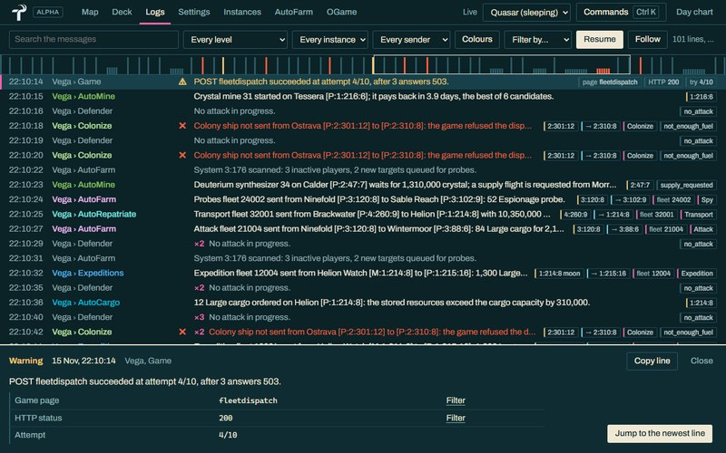
- The filter bar: search, lowest level, instance, sender, Colours, Filter by…, Pause and Follow.
- The volume strip: lines over time, gold for warnings, red for errors. Click it to jump there.
- The lines: time, instance › feature, a ⚠ for a warning or a ✖ for an error, the message and its chips. A pink "×3" means three identical lines in a row.
The lines look like the console and log/TGoat.log. Logging.Style picks the layout: Readable (the default), Levels ([Info], [Warning]) or TBot ([17:56:25 INF Main|Directives]). Changes apply at once.
Each feature's name has its own colour, in the console and on this page. Colours changes them.
Changing a feature's colour, or turning colours off
- On the Logs page, click Colours. Each feature is listed with its colour.
- Click the colour swatch next to the feature.
- Pick a colour, No colour, or Automatic to give it back the colour TGoat chose.
The choice is saved in tgoat.json (Logging.FeatureColours) and applies at once; the panel marks it "yours". To colour only the levels, or nothing at all, set Logging.Colours to Levels only or None (the panel's Log settings link opens it). The NO_COLOR environment variable turns the console's colours off.
Chips are what a line is about, such as a planet (1:214:8) or a reason code (no_free_slot). Click one to keep only the lines that have it. Click its × under the bar to remove the filter.
Click a line to open its detail. Show on the map or Open the setting appear where they apply, and Copy line copies it.
- Pause freezes the list until you click Resume.
- Follow keeps the newest line in view; scrolling up turns it off.
- The page loads the last 2,000 lines (
WebUI.MaxLogsToShow). - The instance switcher doesn't filter the logs: use Every instance.
How do I… find why something didn't happen, follow one planet
- …find out why something didn't happen? Pick the feature in Every sender and Warnings and errors, or click a line's reason chip.
- …follow one planet? Click its coordinates chip on any line.
- …change the setting a warning talks about? Open the line, then click Open the setting.
Reason codes
Each pass of a feature ends with a reason code. It shows in the feature's panel and as a chip in the logs, and the detail names the setting that decided.
slots_reserved means fleet slots are free, but kept for higher-priority features (General.SlotPriorityLevel). The detail gives each feature's share. no_fleet_slot means no slot is free at all.
Reason codes new or changed in the reviews (78)
| Code | Feature | Meaning |
|---|---|---|
storage_for_the_next_build | AutoMine | A storage is raised before a build that would take more than 90 % of it, which leaves room for the other spending of the planet. As a refusal: the storage cap blocks it. |
build_exceeds_storage | AutoMine | The build costs more than a storage holds. Only a supply flight or a bigger storage can pay it. |
a_build_queue_is_the_bottleneck | AutoMine | Nanites or robotics, because a build queue is the bottleneck. |
energy_for_the_next_mine | AutoMine | An energy source is built before the next mine, which would otherwise leave too little energy. |
needed_by_what_is_built_here | AutoMine | Shipyard or robotics needed by what TGoat builds there. |
stock_spent_under_attack | AutoMine | A build started with what the fleet-save could not carry (Brain.AutoMine.SpendStockUnderAttack). |
supply_not_worth_it | Brain | No supply flight for a purchase that neither pays back nor unlocks anything. |
event_list_unreadable | Brain | No supply flight while the event list cannot be read. Tried again after the next read, 1 to 2 minutes later. |
attack_incoming | Brain | No supply flight, satellite or crawler while an attack is coming. Tried again after the impact. |
reserved_for_builds | Brain | The stock is kept for the Brain's next builds. |
research_lab_waiting | AutoResearch | A lab level is wanted and the building queue is busy. It is built when the queue frees. |
no_research_lab | AutoResearch | "No research lab yet" on this planet. On a new account, AutoMine's opening order asks for lab 1 after metal mine 5 and crystal mine 3. |
queue_page_stale | Brain | A build still shows as in progress after its end, 3 checks in a row: the game page seems stale, or your computer's clock is ahead of the server. Said once; the next checks wait the usual delay. |
computed_stop_averted, negative_delay_averted | Brain, any feature | A pass computed a wait of zero or less without being done. It runs again later (about 10 minutes for a planet's Brain worker, 30 to 90 seconds otherwise) instead of stopping. Report it if it repeats. |
lifeform_energy_needed | Lifeforms | The next level needs more energy than available, and AutoMine does not supply this planet. |
waiting_for_energy, waiting_for_population, waiting_for_research | Lifeforms | Retried later, not a stop. |
waiting_for_tech_building | Lifeforms | Research waits for the technology building upgrade to end. |
yield_to_robotics | Lifeforms | The queue waits up to 30 minutes for the robotics or nanites AutoMine wants. |
no_open_lifeform_slot | Lifeforms | No lifeform research slot is open yet; the detail says which population opens the first one. It replaces no_lifeform_research_started. |
lifeform_slot_chosen | Lifeforms | The technology of an open slot was chosen (guaranteed or random). One line per slot, and a notification. |
lifeform_slot_to_choose | Lifeforms | An open slot waits for you to choose its technology: SlotChoice is Never, its limit is 0, or its guaranteed technology could never be researched. Checked again at the interval. |
lifeform_slot_choice_failed | Lifeforms | The game refused the choice, or the page still shows the slot empty. A warning; tried again at the interval. |
lifeform_research_over_budget | Lifeforms | A research level without a production bonus costs more than Brain.LifeformAutoResearch.MaxHoursWithoutYield hours of the planet's production. The detail gives its cost in hours. |
defence_budget_reached, no_defence_budget | AutoDefence | Defences match the budget; or a moon, which produces nothing. |
repatriated_before_sleep | Repatriation | At least one celestial made its last flight before bedtime. |
offer_already_bought, offer_too_expensive, offer_no_surplus | Offer of the day | Nothing on offer; price above Brain.BuyOfferOfTheDay.MaxPriceHours; no celestial can pay from its surplus. |
jump_gate_recharging | Jump gate | The gate recharges. The next pass follows the recharge. |
jump_target_attacked, jump_attacks_unreadable | Jump gate | No jump: an attack is heading for the target, or the event list could not be read. |
no_usable_fleet | Expeditions | The origin has no usable main ship. |
waiting_for_wave | Expeditions | Too few slots are free for a wave yet. |
waiting_for_night_round, night_round_sent | Expeditions | The next expedition would return during sleep; the night round left. |
harvest_not_worth_fuel | Harvest | Every field costs more than 10% of its value in fuel. |
origin_refused, no_origin_surplus, daily_budget_spent | Discovery | The game refused the origins (its text is quoted); no origin has the surplus; the day's budget is spent. They replace no_ships. |
lifeform_settled, lifeform_refused, lifeforms_unreadable, planets_without_lifeform | Discovery | A lifeform settled on a planet; refused by the game (tried again 30 to 60 minutes later); the Lifeforms page could not be read; planets left without a lifeform (AutoDiscovery.SettleLifeforms). |
colony_ships_for_astrophysics | Colonize | Colony ships built during an Astrophysics research that opens a planet. |
lifeform_research_building_needed | Lifeforms | The planet's research building (the Research Centre for Humans), or a requirement on the way to its level 1. No lifeform research starts without it. Only while lifeform research is on for the planet. |
directives_collected, directives_missions_done | Directives | Rewards collected, each named with its chapter; or a mission done, its reward comes with a next check. |
directives_nothing_ready, directives_held | Directives | Nothing waits; or sleep, a break or manual mode: nothing is read. |
directives_unreadable, directives_refused | Directives | The menu or a chapter could not be read, or the game refused a collect. Tried again within the hour. |
directives_disabled | Directives | The feature was turned off while it ran. |
directives_menu_seen | Directives | A game page showed more rewards waiting: the next collect comes sooner, never less than 30 to 60 minutes after the previous one. |
attack_alert_seen | Defender | A game page showed the attack alert: the Defender checks the event list 5 to 15 seconds later. |
game_message_alert, game_channel_listening | Defender | During sleep: a new game message arrived, the Defender checks 1 to 3 minutes later (and 8 to 15 minutes after it if nothing was seen); or the game's channel listens again, one check soon. |
waiting_for_message, night_watch_off | Defender | During sleep: it waits on alert with no request; or Defender.NightWatch is Never. |
night_watch_unavailable | Defender | The game's channel cannot open, stays down, stops answering, or your proxy blocks its port: a warning, then a check every 4 to 8 minutes until the wake-up. |
hostile_fleet_not_on_celestial | Defender | A hostile fleet is heading for something that is none of your planets or moons, after the celestial list was read again. No fleet-save, no alarm; one notice per event. |
event_mission_unknown | Instance | The event list shows a mission TGoat does not know (Project Orion adds some). A hostile one aimed at your celestials is handled as an attack. Said once per mission. |
galaxy_view_dispatch_failed | AutoFarm | The galaxy view's spy button was refused; that target's probes went through the fleet page. A warning the first time. |
combat_rejected_at_confirmation | AutoFarm | The last check before sending refused the plan. The detail says why, such as "4 of 773 final battle simulations failed", a report too old, or ships gone. |
breaker_fleet_proposed, breaker_fleet_ordered, no_breaker_fleet, breaker_order_failed | AutoFarm | A combat fleet for turned-down targets was proposed or, in Automatic mode, ordered; none pays back within AutoFarm.BreakerMaxPaybackDays or the Brain's reserves cannot pay it (the detail says which); the game refused the order (a warning). |
mode_at_start, mode_changed | Instance | The play mode at start-up, or its change, with what it does. |
break_started, break_ended, break_resumed | Instance | A break began, ended, or goes on after a new connection (SleepMode.Breaks.Active). |
relogin_limit_notified | Instance | The game session was lost too often: automatic logins wait, and you got one notification with the time of the next try. |
orion_reward_waiting | Instance | A game page showed an Orion reward waiting to be claimed: you got one notification. |
Changed meaning: max_level_reached and return_too_slow no longer stop a planet; it is checked again in 11 to 13 hours. For lifeform research, max_level_reached stops it only once all 18 research slots are open. more_expensive_than_mine compares paybacks in days. energy_deficit also covers energy built ahead of a mine.
TGoat also records what expeditions and explorations bring back, read from the game's messages, and the outcome of each colony. The Expedition and Discovery reports end with totals for the last 24 hours, and the last 7 days for expeditions.
Expedition results, messages and colonisation draws (3)
Expedition results. Each expedition is judged when it comes back: returned (found, lost, net value), lost, recalled or not_observed. A fleet that disappears before its return is "lost", or "probably lost" when you may have recalled it yourself. The log gives each result and a daily total of what the fleets brought home, which resets when TGoat restarts. Dark matter and items come only from the messages, below.
Results from the messages. TGoat also reads what expeditions and explorations bring back in the game's messages. It reads only messages it has not seen, usually one page, and never deletes or marks them. It keeps 7 days in data/<id>/missions/log.json.
- The Expedition report ends with "last 24 h" and "last 7 days": sent and answered, resources, dark matter, ships found, fleets lost.
- The Discovery report ends with "last 24 h", such as "last 24 h: 10 explorations, 21 artifacts, 2 ships lost, no species".
- A result TGoat does not recognise yet is kept, and the log names it.
Colonization draws. Every colony of a target zone is recorded in data/<id>/colonize/draws.json, with its position, fields and temperatures. Its outcome is pending (the decision comes 3 to 20 minutes after it is seen), kept, abandoned, or held: the zone's try limit is reached and the colony waits for you.
Instances
The Instances page manages the Gameforge accounts TGoat plays, and the profiles they share.

Accounts shows one card per instance, with its state in bold. The left edge is blue when it runs, dashed when it sleeps, red when it needs you, grey when it is idle.
What each state means (7)
| State | What it means |
|---|---|
| Starting | Signing in. |
| Running | Connected, or "Running, in manual mode". |
| Sleeping, wakes up at 06:30 | The Defender watches as Defender.NightWatch says. |
| Waiting to retry | A passing problem. TGoat retries by itself. |
| Stopped until its settings are fixed | Fix its settings; any change restarts it. |
| Waiting for its account details | No e-mail, password or token yet. |
| Disabled, Stopped | Configured, but idle. |
- Settings opens the instance's file in Settings.
- Disable stops the instance and keeps it configured. Enable connects it again.
- Base profiles… picks the profiles applied under this instance's own settings.
- Remove… asks you to confirm. If you also delete its data folder, Gameforge then sees a new device.
When an instance's login failed with a problem the browser sign-in can solve, and it is not running or disabled, its card links Sign in with your browser to the panel in its settings.
Below come Add an account (the first-run form), Discord bot (optional) and Profiles. Each profile card says where it is used; Edit opens it in Settings.
To share settings between accounts, create a profile under New profile and set it in Settings. Then tick it under Base profiles… on each card.
The Discord bot section
Discord bot (optional) sets up and watches the Discord bot. The full steps are in Setting it up.
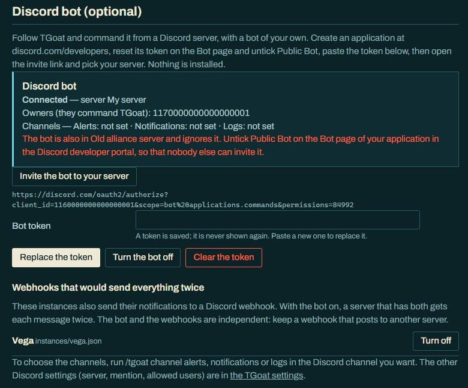
- The state card reads Connected, Not serving or Off. A problem shows in red, with what to do.
- Paste the Bot token and click Save the token and turn the bot on. A saved token is never shown again.
- Invite the bot to your server appears once Discord has accepted the token.
- Webhooks that would send everything twice lists the instances whose Discord webhook is also on. Turn off stops one and keeps its address.
Then choose the channels with /tgoat channel in Discord. For the webhook question, see Bot or webhook.
OGame
The OGame page shows the game in your browser, through TGoat: the same session, device and connection as the bot, with no second login.

Turn Manual mode on before you act in the game, so the bot doesn't act at the same time. The bar turns gold and the bot pauses once it has finished what it was doing. The Defender keeps watching and alerts you.
Manual mode turns itself off 30 seconds after your last click in the game, and the bot resumes.
Open in a new tab opens the game full screen, still through TGoat, by default on port 9091 (WebUI.GameProxyUrls).
On every page
The top bar
- TGoat goes back to the Map. Hover the alpha badge to see the full version.
- Live means the page gets TGoat's updates. "Reconnecting" or "Offline", in red: check that TGoat still runs.
- The instance switcher chooses the instance every page shows.
- A tag marks an instance that isn't playing normally: (error), (starting), (disabled), (needs setup), (offline), (sleeping) or (manual mode).
- Commands (Ctrl K) opens the command palette.
- Day chart or Night chart switches the theme.
The update banner
When a new version of TGoat is out, a banner under the top bar gives its number, a link to its release notes and an Install button. While it installs, the banner says what TGoat is waiting for before it restarts and has a Cancel button; the page reloads once the new version runs. Hide hides it until the next version. A release that could not be verified shows only that, in red: never its name or a link, and it must not be installed by hand. See Updates.
The attack alert
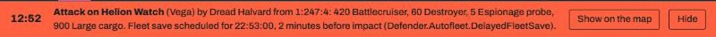
When any instance is attacked, a red banner gives the countdown, the target, the attacker, the attacking fleet and the Defender's plan. The browser tab title shows the countdown too. With several attacks, it shows the soonest.
Show on the map zooms on the attack. Hide hides this attack's banner.
Messages
A short message at the bottom confirms each action, then disappears after a few seconds. A failure shows in red with its exact cause, and stays longer. TGoat's notifications appear the same way.
The command palette
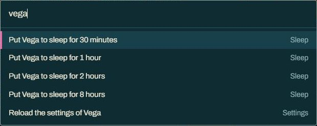
Ctrl K opens it from any page. Type a few words, then pick with the arrow keys and Enter. Type sleep 45m to sleep for any duration.
What the palette offers, page by page
- Everywhere: pages, instances, theme, sleep, settings reload, profiles, and starting or stopping a feature.
- Map: go to a planet or moon, show or board a fleet, toggle the layers.
- Deck: camera, time, alarm sound, lock on a body or fleet.
- Settings: open another file, jump to a setting by name.
- Logs: pause, warnings and errors only, filter by an attribute.
Themes
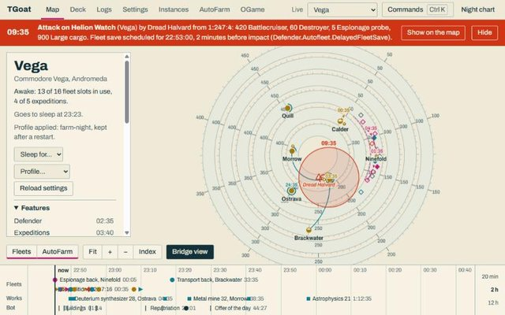
In both themes, gold is your planets and expeditions, pink raids and AutoFarm, blue transports and works, and red anything hostile.
Keyboard shortcuts, page by page (6)
| Where | Keys |
|---|---|
| Every page | Ctrl K command palette. |
| Map | F fleet routes, T AutoFarm layer, I index, B bridge view, D command deck, Esc clear the selection or leave the bridge. |
| Map chart | Arrows move (further with Shift), + and − zoom, 0 fits. |
| Command deck | V camera, T time speed, M alarm sound, P back to the Map, Esc release the lock. |
| Settings | / find a setting, [ and ] previous and next section, T back to top, Ctrl S save. |
| Logs | Arrows, Page Up, Page Down, Home and End move between lines. Esc closes the detail. |
Several tabs, small screens (4)
- Open as many tabs as you like: they share one live connection to TGoat.
- Every page works on a phone, except the command deck and the bridge view.
- On a narrow screen, Live shows only when the link is lost. On a phone, it is hidden.
- On a narrow screen, the theme switch moves to the command palette.